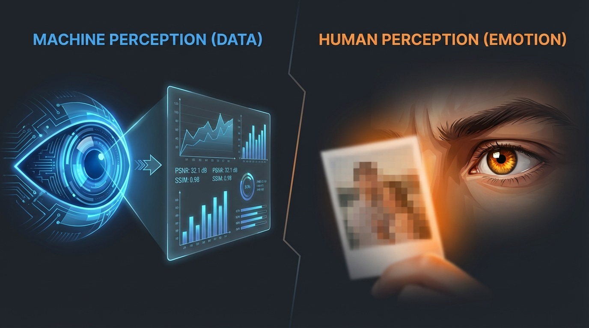

The "Metric" Trap
Traditional metrics like PSNR, SSIM, and NIQE say an image is "better," but to
humans? It often looks unnatural.
The Disconnect Between Metrics and Perception
Metrics optimize for numerical scores, but they don't account for how humans actually perceive
image quality.
PSNR (Peak Signal-to-Noise Ratio): Measures
pixel-level differences, but ignores structural similarity
SSIM (Structural Similarity): Better than PSNR,
but still misses perceptual nuances
NIQE (Natural Image Quality Evaluator):
No-reference metric that doesn't fully reflect human perception
Key Insight: The gap between metric optimization and perceptual quality is the
core problem we solve.

Robotic Eye (Metrics)
Human Eye (Perception)
85%
PSNR Score
92%
SSIM Score
45%
Perceptual